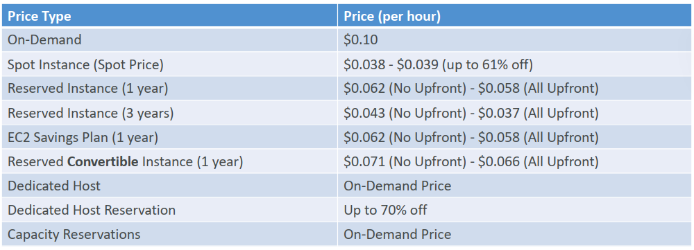
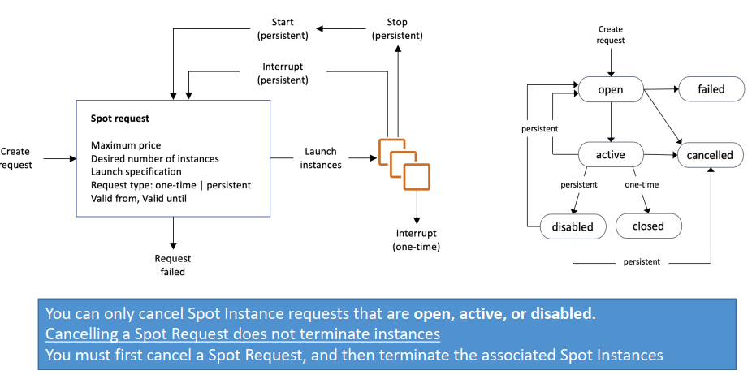

← SAA-C03 Stephane Maarek — Overview
5. Amazon EC2 – Basics
Cách đọc note này: EC2 là dịch vụ nền tảng nhất của AWS — gần như mọi kiến trúc trong khoá đều dựng trên EC2. Note này gồm 2 phần rất khác tính chất: (1) khái niệm cấu hình/bảo mật (5 trục cấu hình, Security Group, SSH) — thi rất nhiều; (2) 8 loại Purchasing Option — thi cực nhiều, gần như câu nào cũng hỏi kiểu “workload X thì mua loại nào”. Đọc kỹ bảng tổng hợp Purchasing Options và bảng từ khoá cuối bài trước khi thi.
Amazon EC2 là gì?
EC2 (Elastic Compute Cloud) là dịch vụ thuê máy chủ ảo phổ biến nhất của AWS — nền tảng của Infrastructure as a Service (IaaS).
EC2 gồm 4 khả năng cốt lõi:
- Thuê máy ảo (EC2 instances).
- Lưu trữ dữ liệu trên ổ đĩa ảo (EBS).
- Phân phối tải qua máy (ELB).
- Tự động scale bằng Auto Scaling Group (ASG).
5 trục cấu hình EC2
Khi launch EC2, bạn cấu hình theo 5 trục:
| Trục | Lựa chọn | Ghi chú |
|---|---|---|
| OS | Linux, Windows, Mac OS | Ảnh hưởng AMI |
| CPU | Số vCPU, compute power | Chọn instance type |
| RAM | GB RAM | Chọn instance type |
| Storage | EBS/EFS (network) hoặc Instance Store (hardware) | Quan trọng cho DB |
| Network | Tốc độ card, Public IP | Enhanced Networking |
| Security | Security Group (firewall rules) | |
| Bootstrap | EC2 User Data script | Chạy lúc first launch |
EC2 User Data — Bootstrap Script
- Cho phép chạy script một lần duy nhất khi instance khởi động lần đầu.
- Chạy với quyền root user.
- Dùng để tự động: cài update, cài phần mềm, download files, cấu hình server.
#!/bin/bash
yum update -y
yum install -y httpd
systemctl start httpd
systemctl enable httpd
echo "<h1>Hello from EC2 User Data!</h1>" > /var/www/html/index.htmlEC2 Instance Types — Phân loại và Use Case
Quy ước đặt tên: m5.2xlarge
m= instance family (m = general purpose)5= generation (thế hệ 5)2xlarge= kích thước
Bảng so sánh 4 nhóm Instance Type chính
| Nhóm | Family | Đặc điểm | Use Case |
|---|---|---|---|
| General Purpose | m, t, a | Cân bằng CPU/RAM/Network | Web server, code repo, nhỏ/vừa |
| Compute Optimized | c | CPU mạnh, tỷ lệ CPU/RAM cao | Batch processing, HPC, game server, ML training |
| Memory Optimized | r, x, z | RAM rất lớn | In-memory DB, distributed cache, BI analytics |
| Storage Optimized | i, d, h | IOPS cao, storage lớn | OLTP, NoSQL DB, data warehouse, distributed FS |
t2.microlà General Purpose — dùng trong free tier của khoá học.
Compute Optimized (prefix c)
Dành cho workload cần CPU hiệu năng cao:
- Batch processing.
- Media transcoding.
- HPC (High Performance Computing).
- Scientific modeling, ML training.
- Dedicated gaming servers.
Memory Optimized (prefix r, x)
Dành cho workload xử lý dataset lớn trong RAM:
- High performance relational/non-relational DB.
- Distributed web scale cache.
- In-memory DB tối ưu cho BI.
- Real-time processing big unstructured data.
Storage Optimized (prefix i, d)
Dành cho workload cần IOPS cao, sequential read/write:
- OLTP frequency cao.
- NoSQL DB (Cassandra, MongoDB).
- Cache cho in-memory DB (Redis).
- Data warehousing.
- Distributed file systems (HDFS).
Security Groups — Tường lửa của EC2
Security Group là stateful firewall ở cấp EC2 instance — kiểm soát traffic vào (inbound) và ra (outbound).
graph LR Internet["Internet"] -->|"HTTP 80 — Allow"| SG["Security Group"] SG --> EC2["EC2 Instance"] EC2 -->|"response"| SG SG -->|"outbound — Allow all"| Internet Attacker["Attacker"] -->|"Port 22 SSH — Blocked"| SG_Block["❌ Blocked by SG"]
Đặc điểm quan trọng:
| Đặc điểm | Mô tả |
|---|---|
| Chỉ có rule ALLOW | Không có Deny rule — không allow = block |
| Stateful | Traffic đi vào được allow → response tự động được phép ra |
| Tham chiếu theo IP hoặc Security Group | Có thể cho phép SG khác thay vì IP |
| Gắn được vào nhiều instance | 1 SG → nhiều EC2 |
| Bound to region/VPC | SG không di chuyển qua region |
| ”Outside” EC2 | EC2 không thấy traffic đã bị block bởi SG |
Mặc định:
- Inbound: block tất cả.
- Outbound: allow tất cả.
Debug tip:
- Timeout khi connect → lỗi Security Group (traffic bị block).
- “Connection refused” → EC2 đang chạy nhưng app lỗi hoặc chưa khởi động.
Ports cần nhớ
| Port | Protocol | Dùng cho |
|---|---|---|
| 22 | SSH | Login Linux instance |
| 21 | FTP | Upload file (file share) |
| 22 | SFTP | Upload file qua SSH |
| 80 | HTTP | Website không mã hóa |
| 443 | HTTPS | Website mã hóa |
| 3389 | RDP | Login Windows instance |
Kết nối vào EC2 — SSH & EC2 Instance Connect
graph LR Client["Máy của bạn<br/>(SSH client / PuTTY)"] -->|"port 22"| EC2["EC2 Instance<br/>(Linux, Public IP)"]
3 cách kết nối vào EC2 Linux:
| Cách | Nền tảng | Cần gì |
|---|---|---|
| SSH trực tiếp | Mac / Linux / Windows ≥ 10 | Key pair (.pem) tự quản lý, port 22 mở |
| PuTTY | Windows < 10 | Convert key pair sang .ppk, port 22 mở |
| EC2 Instance Connect | Mọi nền tảng, ngay trên browser (Console) | Không cần key pair tải về — AWS tự đẩy 1 temporary key lên EC2 lúc kết nối. Chỉ hoạt động out-of-the-box với Amazon Linux 2. Vẫn cần port 22 mở trong Security Group. |
Debug SSH: Nếu không cách nào kết nối được cũng không sao — khoá học ít dùng SSH trực tiếp, ưu tiên Console/User Data. Lỗi kết nối SSH gần như luôn là do Security Group chưa mở port 22 (xem phần Security Group ở trên).
EC2 Instance Purchasing Options
🟩 1. On-Demand Instances
Thuê theo giờ / theo giây, giá cố định.
- Không cam kết thời gian.
- Muốn tạo → tạo. Muốn tắt → tắt.
- Giá cao nhất trong tất cả các lựa chọn.
Dùng khi:
- Lab học, test nhanh.
- Workload unpredictable.
- Chạy ngắn hạn.
🟦 2. Reserved Instances (RI)
Trả trước 1 hoặc 3 năm để được giảm giá (giảm 40–70%), trong đó có 2 loại:
✔ Standard RI
- Giảm giá cao nhất.
- Ít linh hoạt (không đổi type/region dễ dàng).
- Cam kết 1 hoặc 3 năm.
✔ Convertible RI
- Có thể đổi instance type (ví dụ m5 → m6i).
- Giảm giá ít hơn Standard RI.
Dùng khi:
- Workload chạy 24/7 ổn định (database, hệ thống core).
🟧 3. Savings Plans
Giảm giá giống RI nhưng linh hoạt hơn rất nhiều, 2 loại:
✔ Compute Savings Plans (linh hoạt nhất)
- Giảm giá 60–66%.
- Không cần cố định instance type, region, hay OS.
- Miễn sao bạn commit chi tiêu, ví dụ: 5 USD/giờ trong 1 năm.
✔ EC2 Instance Savings Plans
- Giảm giá cao hơn Compute SP.
- Nhưng bị giới hạn theo family (ví dụ m5, t3, c6g…).
Dùng khi:
- Muốn tiết kiệm nhưng vẫn linh hoạt trong scaling, chuyển region, đổi instance family.
🟨 4. Spot Instances
Rẻ nhất (giảm 70–90% so với On-Demand). Nhưng có rủi ro: AWS có thể thu hồi instance bất cứ lúc nào, báo trước 2 phút.
Dùng khi:
- Batch job
- Big data processing
- CI/CD runners
- Training ML
- Không phù hợp database hoặc workload cần ổn định.
🟫 5. Dedicated Hosts
Bạn thuê nguyên máy vật lý — không ai chia sẻ với bạn.
- Dùng cho yêu cầu license Windows / SQL Server cần “BYOL (Bring Your Own License)”.
- Dùng cho compliance: PCI, HIPAA, banking.
Rất đắt.
🟪 6. Dedicated Instances
- Vẫn chạy trên máy vật lý riêng (không share với account khác).
- Nhưng bạn không sở hữu hẳn host như Dedicated Host.
- Giá thấp hơn Dedicated Host.
Dùng khi:
- Cần isolation cấp account.
🟫 7. Capacity Reservations
Bạn giữ chỗ capacity trong region/zone để đảm bảo khi cần là có máy launch liền, có 2 loại:
✔ On-Demand Capacity Reservations
- Pay-as-you-go
- Không discount
- Chỉ để đảm bảo có capacity
✔ Savings Plans with Capacity Reservation
- Combine với SP để vừa giữ chỗ vừa giảm giá.
Dùng khi:
- Workload critical cần đảm bảo capacity trong peak load.
🟩 8. EC2 Fleet / Spot Fleet
Tập hợp nhiều loại instance purchasing options (Spot + On-Demand + RI) để tự tối ưu chi phí.
Dùng cho:
- Auto-scaling
- Large-scale worker nodes
- HPC / ML workload
Bảng phân loại EC2 Purchasing Options
| Loại mua | Giá | Độ linh hoạt | Rủi ro | Khi nào dùng? | Ghi nhớ nhanh |
|---|---|---|---|---|---|
| On-Demand | 💰💰💰 (cao) | ⭐⭐⭐⭐ | Thấp | Test, workload không ổn định | Dùng bao nhiêu trả bấy nhiêu |
| Reserved Instance (RI) | 💰💰 (rẻ hơn 40–70%) | ⭐ | Thấp | Workload chạy 24/7 ổn định | Cam kết 1–3 năm để giảm giá |
| Savings Plans (SP) | 💰 (rẻ nhất sau Spot) | ⭐⭐⭐⭐ | Thấp | Workload dài hạn nhưng cần linh hoạt | Cam kết theo $$, không theo loại máy |
| Spot Instance | 💰 (siêu rẻ, giảm 70–90%) | ⭐⭐⭐ | Cao | Batch, BigData, CI/CD | AWS thu hồi bất cứ lúc nào |
| Dedicated Host | 💰💰💰💰 (đắt nhất) | ⭐ | Thấp | BYOL (Windows/SQL), compliance | Thuê nguyên máy vật lý |
| Dedicated Instance | 💰💰💰 (đắt) | ⭐⭐ | Thấp | Cần tách biệt tenant | Host không share với account khác |
| Capacity Reservation | 💰💰💰 | ⭐⭐ | Thấp | Cần đảm bảo capacity trong peak | Giữ chỗ capacity trước |
| EC2 Fleet / Spot Fleet | Tối ưu tự động | ⭐⭐⭐ | TB | Chạy scale lớn + tối ưu chi phí | Mix Spot + OD + RI để auto tối ưu |
Price Comparison Example – m4.large – us-east-1

Spot Instance và Spot Fleet
🟧 1) Spot Instance — mua instance giá siêu rẻ nhưng có rủi ro
🎯 Định nghĩa ngắn gọn: Spot Instance là EC2 mà bạn mua với giá giảm 70–90% so với On-Demand, vì bạn đang “mua lại capacity dư” của AWS.
Nhưng AWS có quyền thu hồi (terminate) Spot Instance bất cứ lúc nào khi:
- AWS cần capacity, hoặc
- Giá Spot tăng vượt mức bạn sẵn sàng trả
AWS báo trước 2 phút, rồi instance bị shutdown.
🔍 Khi nào nên dùng Spot Instance?
Dùng cho workload:
- Không quan trọng nếu bị gián đoạn
- Tự chạy lại được
- Có checkpoint hoặc retry
- Batch jobs
- Data processing (Spark, Hadoop)
- Rendering
- ML training
- CI/CD runners
❌ Không dùng cho:
- Database
- Web server chịu tải liên tục
- App yêu cầu high availability
- Session-based workload
💡 Điểm mạnh của Spot Instance
- Giá rẻ nhất trong tất cả loại EC2
- Rất phù hợp để scale-out theo nhu cầu
- Tốt khi bạn chỉ cần compute, không cần độ bền
⚠️ Điểm yếu
- Bị kết thúc bất cứ lúc nào
- Phải thiết kế ứng dụng dạng resilient / stateless
- Không phù hợp workload cần long-running stable instance

🟦 2) Spot Fleet — đội quân nhiều Spot Instance + On-Demand để tối ưu chi phí
Bạn có thể tưởng tượng: Spot Instance = thuê máy lẻ, còn Spot Fleet = thuê nguyên đội máy + AWS tự chọn loại rẻ nhất cho bạn.
🎯 Định nghĩa ngắn gọn:
Spot Fleet là một cơ chế tự động để:
- Chạy nhiều loại Spot Instance khác nhau (t2, t3, m5, c6g…)
- Mix Spot + On-Demand
- Giữ số lượng instance đúng theo target capacity
- Tự động thay instance khi bị AWS thu hồi
- Tự động chọn loại instance rẻ nhất / available nhất
Nói cách khác: 👉 Spot Fleet = Auto-scaling dành riêng cho Spot, 👉 Spot Fleet = tự động chọn instance type + tự động tối ưu chi phí
🟩 Spot Fleet hoạt động thế nào?
Bạn chỉ cần khai báo:
- Bao nhiêu capacity cần (ví dụ 20 vCPU hoặc 5 instances)
- Những loại instance nào chấp nhận (m4, m5, c5, t3…)
- Mix bao nhiêu Spot, bao nhiêu On-Demand
- Chiến lược:
✔ lowestPrice → chọn loại instance rẻ nhất
✔ diversified → chia đều nhiều loại để giảm nguy cơ bị thu hồi
✔ capacityOptimized (phổ biến nhất) → chọn instance ít bị reclaim nhất, giúp job chạy ổn định hơn
Sau đó AWS lo hết.
🟦 So sánh nhanh Spot Instance vs Spot Fleet
| Tiêu chí | Spot Instance | Spot Fleet |
|---|---|---|
| Khái niệm | Một instance đơn lẻ | Một nhóm auto-managed Spot |
| Tự động chọn instance rẻ | ❌ Không | ✔ Có |
| Tự thay thế khi bị hủy | ❌ Không | ✔ Có |
| Trộn Spot + On-Demand | ❌ Không | ✔ Có |
| Dùng cho workload lớn | ❌ Hạn chế | ✔ Rất phù hợp |
| Yêu cầu người dùng chọn loại instance | ✔ Có | ❌ Không cần (AWS chọn hộ) |
🟩 Ví dụ thực tế
💡 Spot Instance
Bạn muốn chạy một job Hadoop 1 lần → bạn launch 1–2 Spot Instance. Nếu bị thu hồi, bạn chạy lại.
💡 Spot Fleet
Bạn cần cluster 50 worker nodes giá rẻ để xử lý dữ liệu 1 triệu record.
Spot Fleet sẽ:
- Tự chọn các instance family rẻ nhất
- Dùng cả 10 loại instance khác nhau
- Tự gom 50 nodes
- Nếu 3 nodes bị revoke → tự launch 3 nodes mới
- Có thể chọn mix: 80% Spot, 20% On-Demand để đảm bảo capacity luôn ổn định
Bảng từ khoá đề thi
| Từ khoá trong đề | Chọn |
|---|---|
| ”Workload CPU cao, batch/HPC/ML training” | Compute Optimized (c) |
| “Dataset lớn cần load hết vào RAM, in-memory DB” | Memory Optimized (r/x/z) |
| “IOPS cao, NoSQL DB, data warehouse” | Storage Optimized (i/d/h) |
| “Test ngắn hạn, workload không đoán trước” | On-Demand |
| ”Chạy 24/7 ổn định 1-3 năm, DB core” | Reserved Instance |
| ”Muốn giảm giá dài hạn nhưng vẫn linh hoạt đổi instance type/region” | Savings Plans |
| ”Chấp nhận gián đoạn, có checkpoint/retry, batch/CI/ML training rẻ nhất” | Spot Instance |
| ”Cần license riêng (BYOL) hoặc compliance mức phần cứng” | Dedicated Host |
| ”Cần isolation cấp account nhưng không cần nguyên máy vật lý” | Dedicated Instance |
| ”Đảm bảo có capacity sẵn cho sự kiện sắp tới, không cần giảm giá” | Capacity Reservation |
| ”Cluster hàng chục/trăm node, tự động mix Spot+On-Demand, tự thay node bị thu hồi” | Spot Fleet / EC2 Fleet |
| ”Không cần tải key pair, connect ngay trên browser” | EC2 Instance Connect |
| ”Script chỉ chạy đúng 1 lần lúc khởi động đầu tiên” | EC2 User Data |
| ”SSH timeout” vs “Connection refused” | SG chặn port (timeout) vs app lỗi/chưa chạy (refused) |
Điểm hay ra thi
- Security Group timeout → lỗi SG (traffic bị block). Connection refused → app lỗi.
- Security Group là stateful — không cần allow outbound cho response của inbound rule đã allow.
- Spot Instance bị thu hồi báo trước 2 phút — không dùng cho database hay workload cần ổn định.
- Dedicated Host ≠ Dedicated Instance: Host thuê nguyên máy vật lý (BYOL, compliance); Instance chỉ không share với account khác.
- Savings Plans linh hoạt hơn Reserved Instance (cam kết theo $$ không phải instance type).
- Spot Fleet = tự động mix nhiều loại Spot + On-Demand để tối ưu chi phí.
- User Data script chạy một lần — chỉ lần đầu boot, không chạy lại khi restart.
Takeaway cá nhân
- EC2 là nền tảng của mọi thứ trên AWS — hiểu rõ instance types, SG, purchasing options là bắt buộc.
- Security Group “stateful” là điểm phân biệt với NACL (stateless) — nhớ kỹ.
- Purchasing options: On-Demand → Savings Plans → Reserved → Spot (rẻ nhất nhưng rủi ro).
Atomic notes sinh ra từ đây
- EC2 Instance Types — 4 nhóm và use case đặc trưng
- Security Groups — stateful, default deny inbound / allow outbound
- EC2 Purchasing Options — so sánh tất cả loại (có bảng tổng hợp)
- Spot Instance vs Spot Fleet — cơ chế và chiến lược allocation
- EC2 Instance Connect vs SSH/PuTTY truyền thống
Xem thêm
- 3.2 - Compute - EC2, Lambda, Fargate — EC2 trong bức tranh compute tổng thể
- 4.1 - EC2 Pricing - On-Demand, RI, Spot, Savings Plans — đào sâu hơn về tối ưu chi phí Purchasing Options
- 06 - EC2 - Solutions Architect Associate Level — Placement Groups, ENI, Hibernate (tiếp nối bài này)